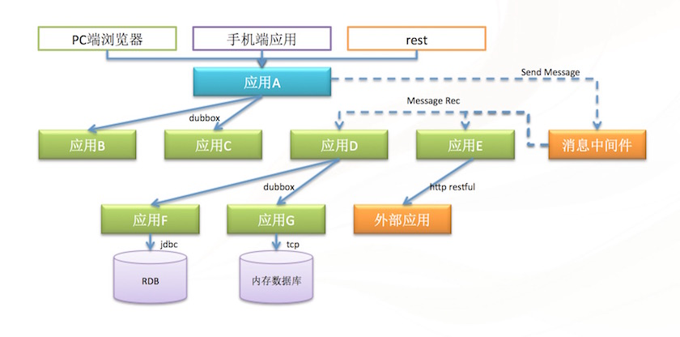

什么是Sky Walking?
他是一个面向分布式系统的全链路监控追踪系统。用于应用集群的分布式调用情况和服务性能监控，负载分布情况的分析系统。
为什么需要Sky Walking?

目前主流的应用系统或者互联网系统，都是由各种不同职责的系统构成的大规模集群(如上图所示)，通过分布式调用（rest、webservice、dubbo、dubbox、消息等）的模式，支持前台系统。系统间关系复杂，无法预先设计与规划。调用链路繁多，通过日志分析难度很大。
分布式系统的开发者和维护人员，希望在系统出现业务错误时，得到邮件通知，并能从全局角度追踪调用关系，而不用在庞大的分布式日志中，寻找关联关系和错误原因。
从Google发表自己的Drapper分布式追踪系统的论文发表以来，wiki、淘宝、京东等各家国内外大型互联网公司，都研发了自己的全链路追踪系统。可见此系统在离散的分布式集群中的重要作用。
另外，针对非分布式应用，应用的性能调优也是开发团队头疼问题，全链路监控可以针对应用的各种本地或远程调用，为提高执行效率提供依据。
Sky Walking支持追踪哪些调用?
Sky Walking已开放底层API的方式，支持对java程序的本地调用、远程调用（同步/异步）、多线程运行的追踪监控
为了方便使用，计划在初期，开发以下常用的插件，更方便的进行追踪监控
1.web调用
2.jdbc调用
3.dubbo/dubbox
4.Spring本地方法调用
5.公司内部封装的内部服务
6.应用可自行封装的各种调用
Sky Walking目前的进展情况?
1.0-alpha2(on developing):
1.支持链路的识别，分析归类，汇总调用次数、成功率、QPS等指标
2.webui展现链路分析报告
3.log4j和log4j2扩展，能在日志中快速展现tid
1.0-alpha1(released):
1.支持链路追踪、上下文传递、追踪日志持久化。
2.追踪插件支持web filter, JDBC(MySQL Driver, other driver extend api), dubbo, dubbox(2.8.4/below 2.8.3), apache httpclient(4.2/4.3), spring context
3.webui展现调用轨迹、耗时、状态等。
4.支持异常调用的识别，并通过邮件告警